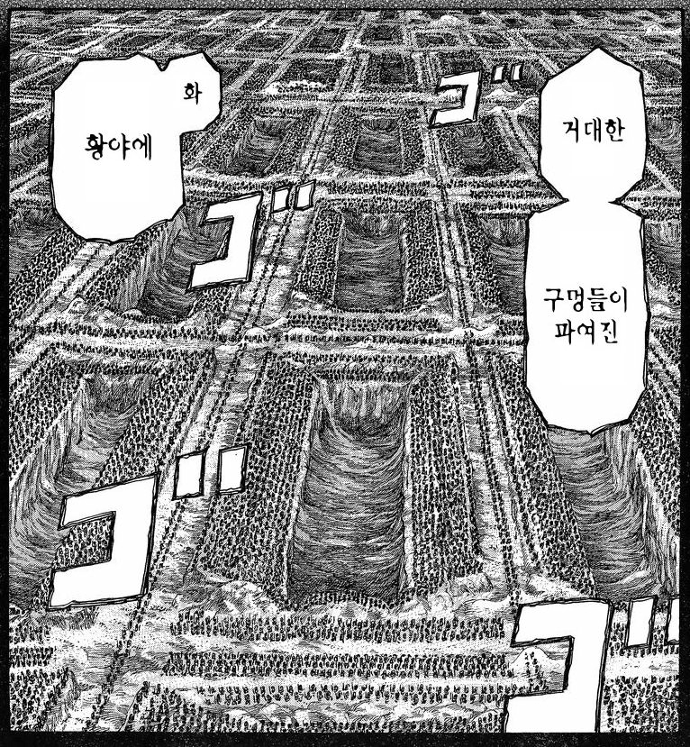
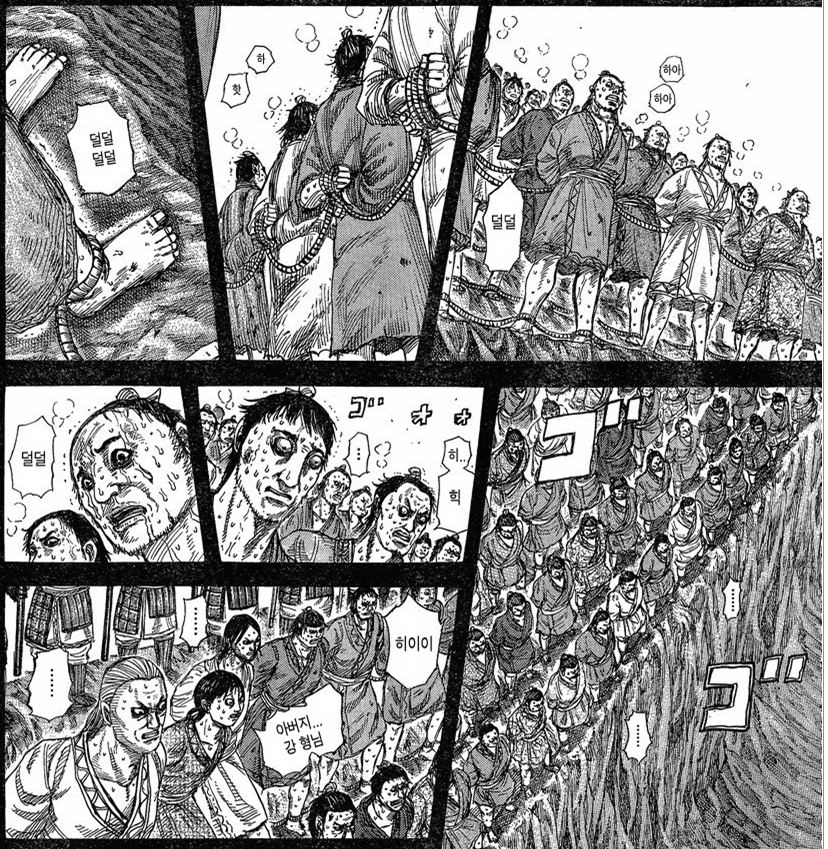
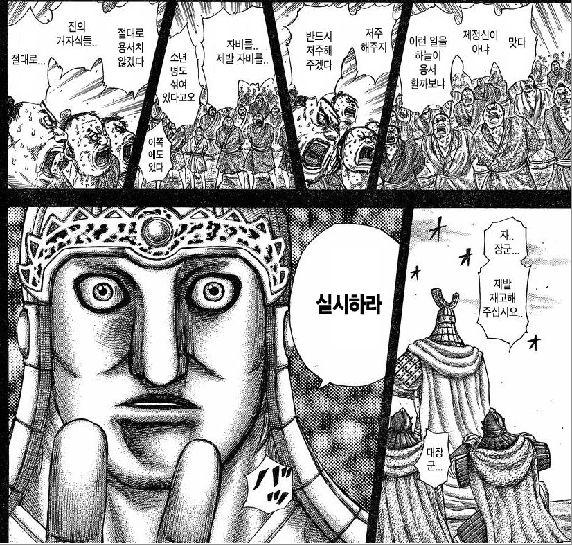
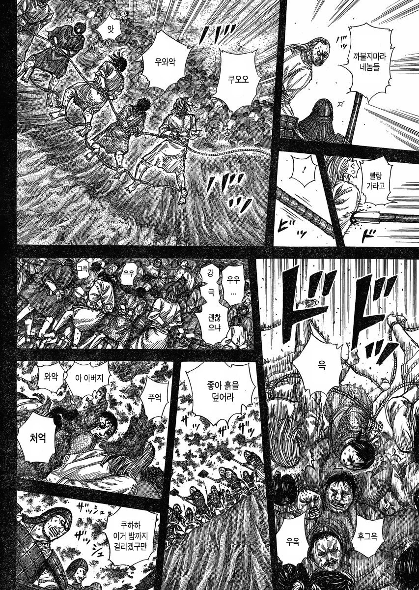
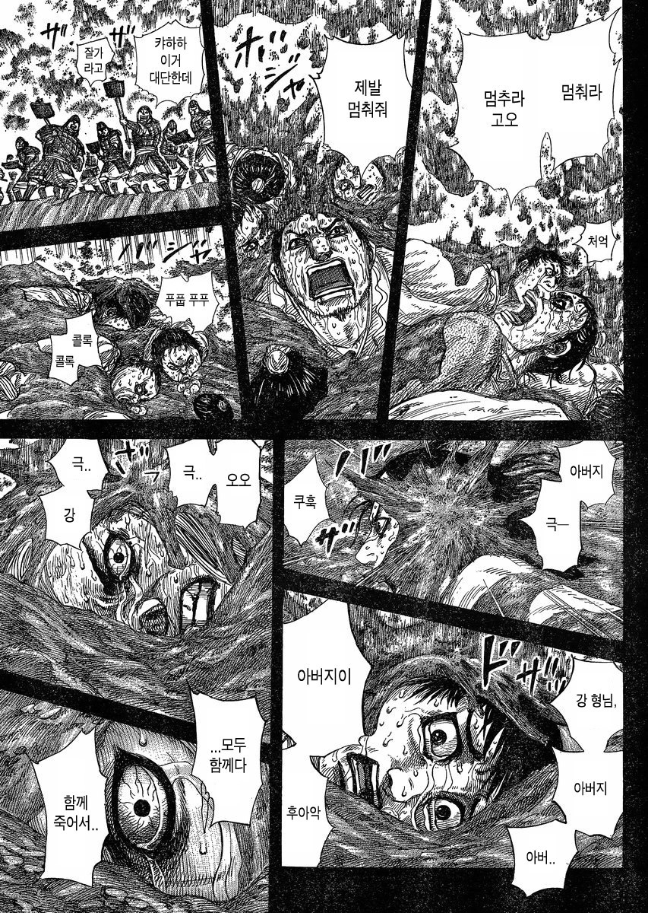
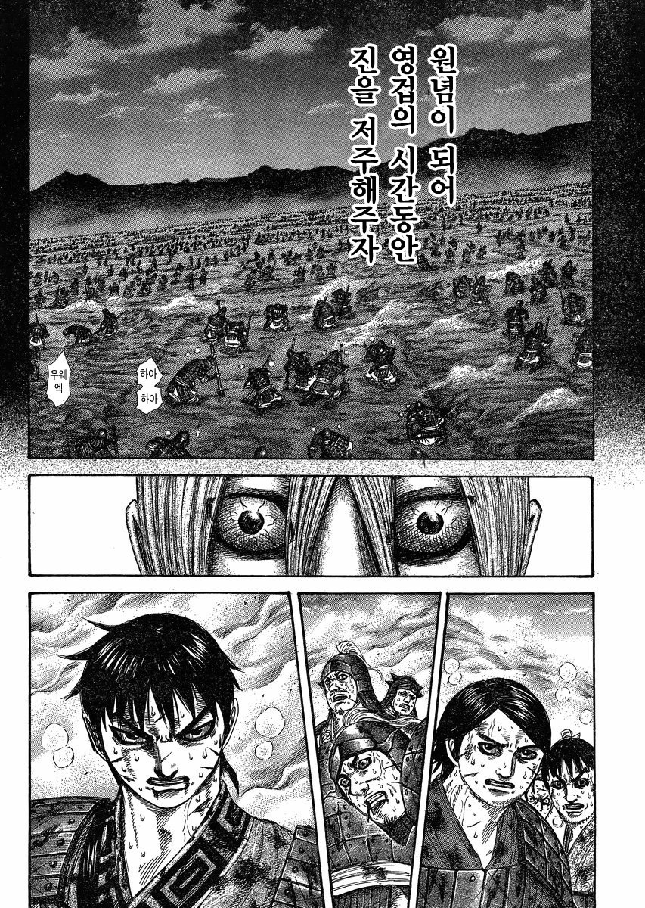
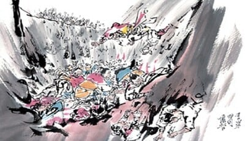

장평전투 후 진나라의 백기(白起)가 조나라 병사 40만의 포로를 생매장한 사건
전투는 끝났다. 그러나 결말은 아직 나지 않았다.
한꺼번에 40만이라는 엄청난 포로를 받게 된 진나라는 고민에 빠졌다.
이렇게 많은 포로를 먹일 군량이 진나라에는 없었다.
결국 백기(白起)는 끔찍한 선택을 했다.
백기(白起)는 조나라 군사들이 조를 나누어 구덩이를 파게 한 후, 그곳에 군사들을 묻어버렸으며,
전투 후에 취한 조나라 군사들의 수급을 모아 영루(營壘)에 쌓게 하였다.
백기는 이 산을 두로산(頭顱山)이라 부르고, 이 산 꼭대기에 지은 누각을 백기대(白起臺)라 불렀다.
.훗날 한 시인이 이 참담한 장면을 다음의 시로 지었다 전한다.
“ 高臺八尺盡頭顱
何止區區萬骨枯
矢石無情緣鬪勝
可憐降卒有何辜
팔 척 백기대 모두가 두골이니,
장수가 공 이루려면 일만의 뼈가 뒹군다는 것은 옛말이라네,
이기기 위해 싸우는 것니 화살과 돌에는 사정이 없다하나,
항복한 군사에게는 무슨 죄가 있을까"
이러한 행동으로 얻게 된 효과는 상당했다.
당시 다른 5국에 경고하는 의미(진나라에 대항하는 자는 죽음 뿐이다)도 있었으며, 조나라에게는 항전의 의욕을 완전히 꺾어버린 것이었다
. 게다가 농사를 지을 남자들이 거의 남지 않게 된 조나라는 이후 완전히 몰락해 버리고 말았다.
다시는 예전의 힘을 회복하지 못한 조나라는 결국 약 30년 후인 기원전 228년 멸망하고 말았다.
하도 많이 묻어서 인골로 이뤄진 지층이 발견될 정도라던데
진짠지는 모름
끔찍하네